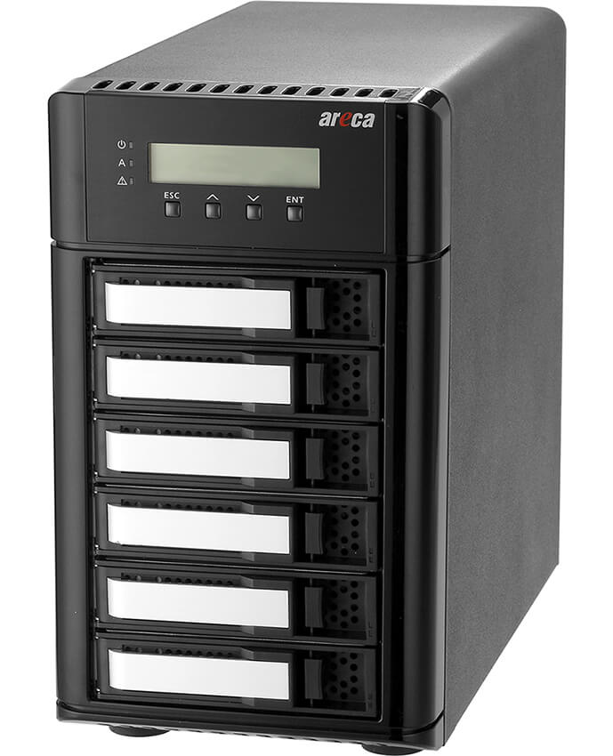

ARC-8050U3-6
(6-bays USB 3.2 Gen 2 to 12Gb/s SAS RAID storage)
System Architecture
✵ Dual Core RAID-on-Chip (ROC) 1.2 GHz processor
✵ On-board 2GB DDR3-1866 ECC SDRAM
✵ Support 6 internal 12Gb/s SAS ports
✵ Write-through or write-back cache support
✵ Redundant flash image for adapter availability
✵ Battery backup module ready (optional)
✵ Hard Drive Firmware Update All At Once
Faster Than Ever
Availability & Security
Unparalleled Performance
Host Interface
1 x 10Gbps USB 3.2 Gen 2
- Supports UASP (USB Attached SCSI Protocol)
- Backwards compatible with USB 3.2 Gen1(3.0)/2.0

High Performance ROC
Dual Core RAID-on-Chip (ROC) 1.2 GHz
2GB DDR3-1866 ECC Protection
Drive Interface
Up to 6 x 3.5”/2.5”
12Gb/s SAS or 6Gb/s and 3Gb/s
SAS/SATA HDDs/SSDs
6-bays USB 3.2 Gen 2 to 12Gb/s SAS RAID storage
ARC-8050U3-6 RAID enclosure offers a truly innovative USB 3.2 Gen 2(10.0Gbps) host interface solution for SOHO group professionals who work at home and or in the office. Using USB 3.2 Gen 2 to PCIe bridge and Areca existing ARC-8050T3-6 industry-proven hardware RAID controller, this RAID storage delivers the performance enhancement of USB 3.2 Gen 2 at the best of cost/performance value.
With the much faster speed than ordinary USB 3.2 Gen 1 (USB 3.0) based storage, ARC-8050U3-6 is an alternative RAID storage for SOHO group professionals who need an affordable storage at home and or in the office. The advancement of 10Gbps USB3.2 Gen 2 connectivity allows the RAID storage to transfer end-to-end 10Gbps storage speed and fully backward compatible with USB 3.0/2.0 interconnection. ARC-8050U3-6 is OS independent, with no additional software or driver installation required, and also used on any Thunderbolt™ 3 USB-C port.
Function Advantages
| Feature 1 | OS Independent |
| OS independent, with no additional software or driver installation required. | |
| Feature 2 | Multi-Protocol |
| Fully backward compatible with USB 3.0/2.0 interconnection and also used on any Thunderbolt™ 3 USB-C port. | |
| Feature 3 | Controller-level Hardware Encryption |
| Board-level hardware encryption manages any kinds of drives attached to ARC-8050U3-6 without impacting the performance for higher levels of security. | |
| Feature 4 | BBM Support |
| Supports a battery backup option that protects all data in cache memory in the event of unexpected power outage for data availability. | |
| Feature 5 | Intelligent Power On/Off Function |
| Turns ARC-8050U3-6 power in unison with the host computer power status for data integrity. | |
| Feature 6 | Front Panel LCD and Buttons |
| Easy access for configuration and status report. | |
| Feature 7 | Network Interface |
| Embedded web server for remote control from one 10/100/1000 Ethernet (RJ-45). | |
| USB3.2 Gen 2 to 12Gb/s SAS RAID Storage | |
| ARC-8050U3-6 | |
| Form Factor | Desktop 6-bays |
| Host Connection | USB 3.2 Gen 2 x 1 |
| Disk Support | 6 x 12Gb/s SAS or 6Gb/s SATA |
| Expansion Support | SFF-8644 (2-lanes) |
| I/O Processor | Dual Core 1.2 GHz SAS ROC |
| On-Board Cache | 2GB DDR3-1866 |
| Cooling Fan | 1 x 2700rpm |
| Power Supply | 180W |
| Physical Dimensions (H x W x D) |
4.84 x 8.45 x 9.11 in (146.4x255x290 mm) |
| Weight | 13.2 lbs / 6.0Kg |
| RAID Level | 0, 1, 1E, 3, 5, 6, 10, 30, 50, 60, Single Disk or JBOD |
| OS Support | OS Independent |
| BBM Support | ARC-6120BAT021-T3 |
Ultrafast Transfer Speed
Unprecedented Performance
ARC-8050U3-6 RAID storage is built to deliver unprecedented performance, using only carefully, best-in-class components. These include the dual core LSI SAS3108, 12Gb/s SAS ROC, 2GB DDR3-1866 SDRAM with ECC protection and the latest USB 3.2 Gen 2-enabled USB-C ports up to 10Gbps.
Powerful Broadcom 12G SAS Engine
ARC-8050U3-6 integrates the latest Broadcom 12Gb/s dual core SAS Raid-on-Chip to give you the maximum SAS and SATA bandwidth and protection you need to tackle even the hardest challenging tasks easily.
True Hardware RAID Controller
At the heart of ARC-8050U3-6 RAID storage is the incredibly powerful dual-core Broadcom SAS3108 ROC, giving effortless performance as desirable. It delivers true hardware RAID function without sharing the CPU computing power on the host system and also eases off CPU loading as compared to software RAID and when rebuilding an array in the event of a drive failure.

Speed Up 2GB DDR3-1866 SDRAM
With a massive 2GB of DDR3-1866 SDRAM, ARC-8050U3-6 gives you super-smooth multitasking during the period of high overload in 4K environment. ARC-8050U3-6 can configure how much cache SDRAM dedicated for read, and how much for write. If your server application has significantly more reads than writes or more writes than reads, you might need to change this setting to adjust the read/write cache ratio for improving performance. Big cache is the perfect choice for a 4K application drive, making your professional apps work as fast as possible.
| SDRAM | Memory Clock (MHz) | Bus Clock(MHz) | Data Rate(MT/s) | Peak Transfer Rate (GB/s) |
|---|---|---|---|---|
| DDR3-800 | 100 | 400 | 800 | 6.4 |
| DDR3-1066 | 133.33 | 533.33 | 1066.67 | 8.5 |
| DDR3-1866 | 233.33 | 933.33 | 1866.67 | 14.9 |
Professional Connectivity
The USB-C That Does It All
ARC-8050U3-6 is equipped with one USB3.2 Gen 2 ports for connecting to any 10Gbps USB 3.2 gen 2 hosts and fully backward compatible with USB 3.0/2.0 interconnection. It is OS independent, with no additional software or driver installation required, and also used on any Thunderbolt™ 3 USB-C port.
SAS Expansion Port
ARC-8050U3-6 RAID storage provides is one external port that it can support JBOD, SAS and/or SATA target ports. The SAS RAID storage can support capacity expansion by adding expander enclosures. You can gradually expand the storage up to 512 Hdd s through the expander enclosures.
Controller-Based H/W Encryption Engine
Host independent real-time controller-based hardware encryption does not impact the performance of ARC-8050U3-6 RAID storage and can implement on any kinds of HDD that is transparent to the user, the OS, and applications. Areca encryption function secures a sensitive, mission-critical volume's data from unauthorized access or modification in the event of drive theft, as well as more routine activities such as the return of defective drives for servicing or the decommission or repurposing of drives. Local key management in the controller is designed to protect data from security breaches with minimal cost and complexity. User can use ARC-8050U3-6 RAID storage API code to design its own key management utility. ARC-8050U3-6 RAID storages support 128- and 256-bit encryption keys using AES (a key size of 128, or 256 bits), or password (a variable key size).
SED-Based Encryption
Areca firmware Security Function, together with self-encrypting drives (SEDs), secures a data in the hard disks from unauthorized access or modification resulting from theft, loss or repurposing of drives. Protection is achieved by the SED hard drive that automatically and continuously encrypts the data on the drive without any user interaction.
RAID Storage Power On/Off Controls
ARC-8050U3-6 RAID storage contains power On/Off controls on the controller. The power On/Off controls can turn ARC-8050U3-6 power in unison with the host computer power status for data integrity. It is advised that you use a proper power down procedure when you would like to power down your Mac and thunderbolt storage. If you attempt to power it down by pressing and holding the power button you run the risk of losing unsaved data and increase the chance of damaging hardware, more specifically the hard drive. Following improper power down, power up and restart sequence of a thunderbolt RAID storage and attached hosts will affect the normal functionality.
Effective Management Tool
Areca provides more flexible management tools comparing with others competitors to manage and monitor ARC-8050U3-6 RAID storage.
• LCD: Easy Configuration & Monitor
Instantly monitor system's status as a glance
ARC-8050U3-6 LCD is the primary user interface for the RAID storage. All configuration and management of the controller and its properly connected disk arrays can be performed from this interface. The LCD status panel informs you of the ARC-8050U3-6 RAID storage real-time operating status at a glance so users can easily grasp the status of the system at all times.
• LAN Port: Out of Band Management (Without Disturb Host Access)
Lets you set up and manage RAID storage through Out-of-band web browser manager and ArcSAP utility
ARC-8050U3-6 RAID storage also offers an alternative out-of band method to access the built-in configuration without needing any driver on the host system. You can monitor and manage an ARC-8050U3-6 RAID storage using this dedicated management channel to manage the ARC-8050U3-6 RAID storage without any host connection. It will also not disturb the host access when you monitor or manage the ARC-8050U3-6.
Web Browser-Based Management
McRAID storage manager is firmware-based utility, which is accessible via the web browser installed on your operating system. The web browser-based McRAID storage manager is a HTML-based application, which utilizes the browser (Google Chrome, Safari, IE and Mozilla etc) installed on your monitor station. It can be accessed through the out of band ethernet port.

User-Friendly Graphical-Based Management
Areca Single Admin Portal (ArcSAP) quick manager is an alternative graphical-based device management program specifically designed for use in managing and configuring RAID unit implemented using any of Areca RAID controllers. ArcSAP quick manager can scan for multiple RAID units in the local and remote systems and provide an effective mechanism to configure your RAID units.
Smart Battery for the Integrity of the Cached Data
ARC-8050U3-6 RAID storages have integrated caches for increasing performance. With corresponding protective mechanisms, the content of these unwritten cached data in the SDRAM would be lost when there is a complete AC power failure or a brief unexpected power outage. For that reason, a battery backup unit (BBU) protects the integrity of the cached data on ARC-8050U3-6 RAID storages by providing backup power. The battery backup module has built-in functionality to charge the battery pack automatically and to communicate battery status information to the RAID storage.
Benchmark
Actual data rates may vary depending on operating environment, RAID mode, RAID configuration, disk model and disk performance. The best performance is installed six SSDs and connect the device to a computer that supports USB 3.2 Gen 2 at 10Gbps...... more detailed information
Whisper-Quiet Operation
The intelligent cooling continuously adapts to environmental conditions by automatically controlling the speed of cooling fans. As a result, the fan reduces noise to a minimum, almost imperceptible level. Whisper-Quiet Low Sound Levels operation, make the ARC-8050T3 well suited for video/audio applications, without impacting the work environment.
| ARC-8050U3-6 | |
|  | |
| Sound Pressure Level | 35.5 dB |